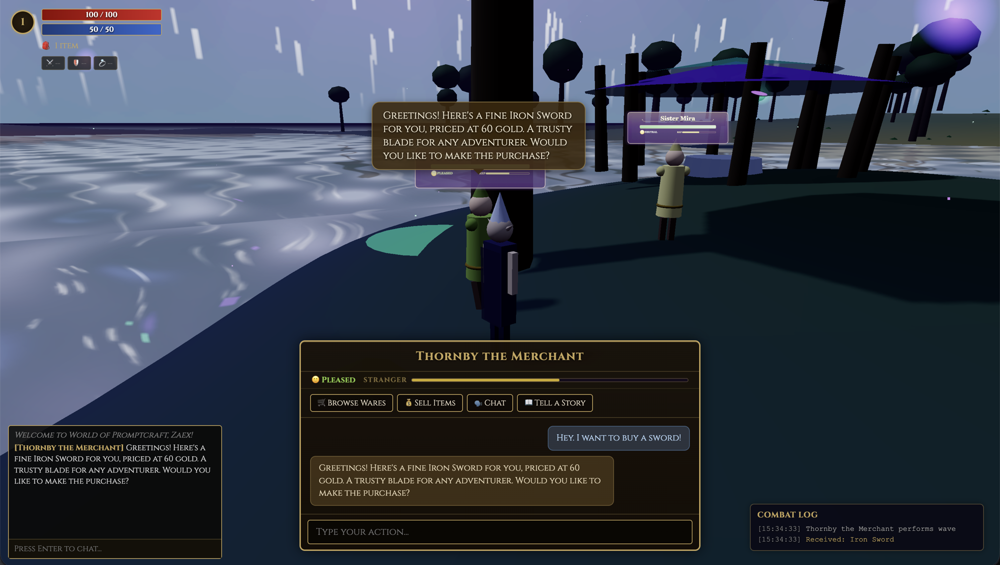
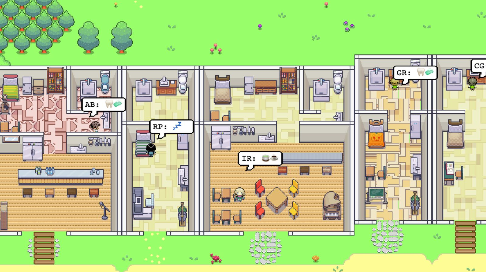

The agentic world where prompting is the interface


flowchart LR
subgraph YOU["Your client · Three.js"]
direction TB
UI["Prompt"]
GE["Game Engine
render mirror"]
end
WS((("WebSocket")))
subgraph SERVER["Server · FastAPI — authoritative"]
direction TB
H["Router
combat fast-path · agent"]
AG["Per-NPC LangGraph
reason · act · respond"]
WST["WorldState
shared runtime state"]
CM["ConnectionManager
broadcast nearby"]
end
MAN[("World Manifest
shared baseline")]
LLM[("LLM + lore RAG")]
OTH["Other players
render mirrors"]
UI -->|"1 · prompt / move"| WS
WS -->|"2"| H
H -->|"3"| AG
AG -->|"reason + tools"| LLM
AG -->|"4 · actions"| WST
MAN -->|"loads baseline"| WST
WST -->|"5 · state delta"| CM
CM -->|"6 · broadcast"| WS
WS -->|"7 · update"| GE
WS -->|"7 · same delta"| OTH
classDef client fill:#0f1d2b,stroke:#5aa0c5,color:#dce8f2,stroke-width:1.5px
classDef ws fill:#2a1f10,stroke:#e8b84b,color:#ffe9b0,stroke-width:2px
classDef server fill:#1b1330,stroke:#9a6fc5,color:#e7dcf4,stroke-width:1.5px
classDef world fill:#2a1810,stroke:#cc8844,color:#f2dcc4,stroke-width:1.5px
classDef shared fill:#15251a,stroke:#c5a55a,color:#ecdcb4,stroke-width:2px
classDef ai fill:#0f231c,stroke:#56b89a,color:#cdeede,stroke-width:1.5px
class UI,GE,OTH client
class WS ws
class H,AG server
class WST,CM world
class MAN shared
class LLM ai
style YOU fill:#0a1420,stroke:#3f7596,color:#9fc4dc
style SERVER fill:#120c1f,stroke:#6f4f95,color:#bfa6dc
The Three.js front-end — a procedural, code-defined world drawn live in the browser.
The FastAPI server + LangGraph agents — one autonomous agent per character.
How the whole thing is built — meshes, biomes and features authored by prompting.
buildMesh(type) builds any of them.flowchart TB CORE["core
GameBootstrapper · GameEngine"] subgraph IO["I/O"] direction LR UIM["ui
panels · HUD · prompt"] NET["network
WebSocketClient · Protocol"] end subgraph DATA["state"] direction LR ST["PlayerState · WorldState"] MAN["WorldManifest"] end subgraph WORLD["render & world"] direction LR SCN["scene
SceneManager · Terrain · Water · Sky"] SYS["systems
WorldGenerator · Populator · Reaction"] MSH["meshes
MeshRegistry · catalog"] ENT["entities
Player · NPC · EntityManager"] end CORE --> IO CORE --> DATA CORE --> WORLD UIM --> NET NET --> ST MAN --> SCN MAN --> SYS SCN -->|"chunk loaded"| SYS SYS --> MSH SYS --> ENT MSH --> SCN ENT --> SCN NET --> ENT classDef core fill:#2a1f10,stroke:#e8b84b,color:#ffe9b0,stroke-width:2px classDef io fill:#0f1d2b,stroke:#5aa0c5,color:#dce8f2,stroke-width:1.5px classDef data fill:#15251a,stroke:#c5a55a,color:#ecdcb4,stroke-width:1.5px classDef world fill:#1b1330,stroke:#9a6fc5,color:#e7dcf4,stroke-width:1.5px class CORE core class UIM,NET io class ST,MAN data class SCN,SYS,MSH,ENT world style IO fill:#0a1420,stroke:#3f7596,color:#9fc4dc style DATA fill:#101c12,stroke:#6f5f2f,color:#ccbf90 style WORLD fill:#120c1f,stroke:#6f4f95,color:#bfa6dc
flowchart LR
WS((("WebSocket
all comms")))
subgraph SERVER["Server · FastAPI"]
direction TB
H["WS Handler
fast-path · agent router"]
subgraph AGENT["Per-NPC LangGraph agent"]
direction LR
RSN["reason"] --> ACT["act · tools"] --> RSP["respond"]
end
subgraph STATE["Shared state"]
direction LR
WST["WorldState"]
PST["PlayerState"]
end
WS_OUT["ConnectionManager
broadcast nearby"]
end
RAG[("Lore RAG
keyword retriever")]
LLM[("LLM provider
Claude · Ollama")]
subgraph SHARED["Shared library"]
MAN[("World Manifest
baseline")]
end
WS -->|"prompt · move · action"| H
H -->|"invoke agent"| AGENT
H -->|"update position"| PST
RSN -->|"inference"| LLM
ACT -->|"lore lookup"| RAG
ACT -->|"pending actions"| WST
MAN -->|"baseline load"| WST
STATE -->|"state delta"| WS_OUT
WS_OUT -->|"AgentResponse · world delta · player states"| WS
classDef ws fill:#2a1f10,stroke:#e8b84b,color:#ffe9b0,stroke-width:2.5px
classDef server fill:#1b1330,stroke:#9a6fc5,color:#e7dcf4,stroke-width:1.5px
classDef ai fill:#0f231c,stroke:#56b89a,color:#cdeede,stroke-width:1.5px
classDef shared fill:#15251a,stroke:#c5a55a,color:#ecdcb4,stroke-width:2px
class WS ws
class H,AGENT,RSN,ACT,RSP,WST,PST,WS_OUT server
class LLM,RAG ai
class MAN shared
style SERVER fill:#120c1f,stroke:#6f4f95,color:#bfa6dc
style AGENT fill:#1a1030,stroke:#8060b0,color:#cbb8e8
style STATE fill:#0e1a10,stroke:#507050,color:#b8d4b8
style SHARED fill:#1a1508,stroke:#c5a55a,color:#ecdcb4
flowchart TD
IN(["Player prompt"]) --> R
R["reason\nlore · memory · intent · plan"]
A["act · tools\ncheck · trade · attack · query"]
S["respond\ngenerate dialogue"]
U["update state\nmemory · mood · relationship"]
R -->|"tools needed"| A
A -->|"results — re-evaluate"| R
R -->|"done"| S
S --> U
U --> OUT(["AgentResponse\ndialogue + actions"])
LLM(["LLM"]) -.->|"reason call"| R
LLM -.->|"respond call"| S
RAG(["Lore + Memory"]) -.->|"context"| R
classDef node fill:#0d0b18,stroke:#d4b369,stroke-width:1.5px,color:#f4ecdd
classDef io fill:#081410,stroke:#56b89a,stroke-width:1.5px,color:#8ee4c4
classDef ext fill:#080812,stroke:#7088d0,stroke-width:1.5px,color:#a4b4e8
class R,A,S,U node
class IN,OUT io
class LLM,RAG ext
That blade? Forged in the old Malaka style — double-edged, balanced for close quarters. I sourced it from a smith in the lower district before the fire. You won't find better this side of the mountains.
You did, and I remember it. Forty-five gold — five off for the favour. Take it.
You again. Your blade still serving you? I've got armour this week — lighter than it looks. Sixty gold, and I'll throw in a whetstone given our history.
propose_trade() mutated WorldState. The discount was computed, not written.tsc + eslint + pytest. Loops until all checks are green — the human reviews the diff, not the loop.any · conventional commits · CI gates · per-NPC isolation · tool factory pattern
Type anything — the world answers.